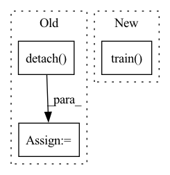

Pattern ID :19072
Before Change
spk_style_embedding_of_gold = spk_style_embedding_function(batch_of_spectrograms=batch[2].to(device),
batch_of_spectrogram_lengths=batch[3].to(device)).detach()
emo_style_embedding_of_gold = emo_style_embedding_function(batch_of_spectrograms=batch[2].to(device),
batch_of_spectrogram_lengths=batch[3].to(device)).detach()
train_loss, output_spectrograms = net(text_tensors=batch[0].to(device),
text_lengths=batch[1].to(device),
gold_speech=batch[2].to(device),After Change
print("Time elapsed: {} Minutes".format(round((time.time() - start_time) / 60)))
print("Steps: {}".format(step_counter))
net.train()
style_embedding_function.train()
In pattern: SUPERPATTERN
Frequency: 3
Non-data size: 3
Instances Fragment ID: 62182725
Project Name: digitalphonetics/ims-toucan
Commit Name: e96354fb23b7b7044302a5d76f415d5585feb304
Time: 2022-09-09
Author: florian.lux@ims.uni-stuttgart.de
File Name: TrainingInterfaces/Text_to_Spectrogram/FastSpeech2/fastspeech2_train_loop.py
M Class Name: AnonimousClass
N Class Name: AnonimousClass
M Method Name: train_loop(15)
N Method Name: train_loop(16)
M Parent Class:
N Parent Class:
M File Name: TrainingInterfaces/Text_to_Spectrogram/FastSpeech2/fastspeech2_train_loop.py
N File Name: TrainingInterfaces/Text_to_Spectrogram/FastSpeech2/fastspeech2_train_loop.py
M Start Line: 120
M End Line: 298
N Start Line: 145
N End Line: 272
Before Change
self.bn.momentum,
self.bn.affine,
self.bn.track_running_stats)
bn.weight = Parameter(self.bn.weight.detach() )
if self.bn.affine:
bn.bias = Parameter(self.bn.bias.detach())
modules.append(bn)After Change
conv_relu.train(self.training)
return conv_relu
else:
conv.train( self.training)
return conv
class ConvBn1d(_ConvBnNd, nn.Conv1d):
r Fragment ID: 62182726
Project Name: pytorch/pytorch
Commit Name: f5c7e5406b3896fd14b604e889d1ecfac702fc89
Time: 2022-03-03
Author: jerryzh@fb.com
File Name: torch/nn/intrinsic/qat/modules/conv_fused.py
M Class Name: _ConvBnNd
N Class Name: _ConvBnNd
M Method Name: to_float(1)
N Method Name: to_float(1)
M Parent Class: nn.modules.conv._ConvNd,nni._FusedModule
N Parent Class: nn.modules.conv._ConvNd,nni._FusedModule
M File Name: torch/nn/intrinsic/qat/modules/conv_fused.py
N File Name: torch/nn/intrinsic/qat/modules/conv_fused.py
M Start Line: 220
M End Line: 255
N Start Line: 221
N End Line: 259
Before Change
loss.backward()
optimizer.step()
loss_sum += loss.detach() .item()
print("Client[{}] Traning. Epoch {}/{}, Loss {:.4f}, Time {:.2f}s".
format(id, epoch + 1, epochs, loss_sum,After Change
epochs = 5
criterion = torch.nn.CrossEntropyLoss()
optimizer = torch.optim.SGD(self._model.parameters(), lr=0.1)
self._model.train()
for _ in range(epochs):
for data, target in data_loader: Fragment ID: 62182721
Project Name: smilelab-fl/fedlab
Commit Name: 16befdf9173a4b4f4430f456b5353765c6d4d3e3
Time: 2021-08-08
Author: 928255708@qq.com
File Name: fedlab/core/client/serial_trainer.py
M Class Name: SerialTrainer
N Class Name: SerialTrainer
M Method Name: _train_alone(4)
N Method Name: _train_alone(8)
M Parent Class: ClientTrainer
N Parent Class: ClientTrainer
M File Name: fedlab/core/client/serial_trainer.py
N File Name: fedlab/core/client/serial_trainer.py
M Start Line: 102
M End Line: 137
N Start Line: 98
N End Line: 119